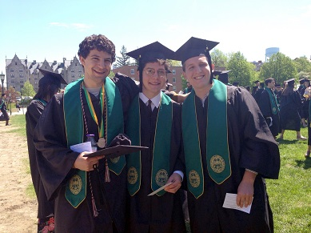

The following links provide basic orientation to the process of graduate school admissions in the four subfields of Anthropology (socio-cultural, archaeological, linguistic, and biological). It offers perspectives and advice on how to approach the application process, what you can do to prepare before you graduate, how to select the best program and school for you, how to write a personal statement and ask for recommendations, and and basic resources for further exploration. As you read and use this, keep in mind that people approach each step of the process differently, and that you will want to consult with others, including your professors and anyone else you know who is going or has gone through the process.
